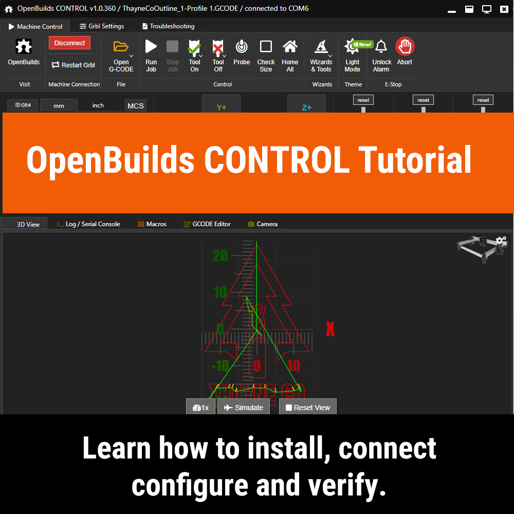

Руководство по OpenBuilds CONTROL
Краткий обзор и описание интерфейса для станка ЧПУ 3040 / 4060
Программа мощнее CNCV4 и даёт больше возможностей, но в ней можно менять настройки прошивки GRBL. Один неосторожный эксперимент может сбить настройки. Если вы только начинаете — лучше оставайтесь на CNCV4. Есть инструкция по восстановлению прошивки.
Ваш станок на базе GRBL полностью совместим с этой бесплатной профессиональной программой. Она даёт удобные мастера, 3D-просмотр, управление с телефона, макросы и возможность работы не только с фрезером, но и с лазерным модулем, плазмой или другими инструментами.
💾 Скачать OpenBuilds CONTROL 1.0.390 (Windows) Официальные загрузки на GitHub (Mac / Linux)
1. Подключение к станку
2. Интерфейс программы
Основные вкладки сверху: Machine Control, Grbl Settings, Troubleshooting.

Верхняя панель (Machine Control)
| Кнопка / элемент | Что делает |
|---|---|
| Connect / Disconnect | Подключение / отключение от контроллера |
| Open GCODE | Открыть файл G-кода |
| Run Job / Stop Job | Запустить / остановить задание |
| Tool On / Tool Off | Включить / выключить шпиндель (или лазер в соответствующем режиме) |
| Probe | Мастера щупа (установка нуля по X/Y/Z) |
| Check Size | Проверить габариты задания (траектория без реза) |
| Home All | Домой по всем осям (если настроены концевики) |
| Wizards & Tools | Мастера: выравнивание стола, калибровка шагов, Mobile Jog и др. |
| Unlock Alarm | Снять аварийную блокировку |
| Abort | Экстренная остановка |
Панель Jog и координаты
Слева — текущие координаты (рабочие и машинные), кнопки Set Zero и Goto Zero. Справа — джойстик для ручного перемещения (шаговый или непрерывный режим), ползунки скорости подачи и оборотов.
Нижняя часть
- 3D View — трёхмерный предпросмотр траектории
- Log / Serial Console — журнал команд и ответов контроллера
- Macros — пользовательские кнопки-макросы
- GCODE Editor — простой редактор кода
3. Управление с телефона (Mobile Jog)
Одна из самых удобных функций. Пока компьютер подключён к станку, можно управлять осями со смартфона.
http://IP:3000/jog).
На телефоне появляются кнопки движения осей — удобно подходить к станку и точно позиционировать инструмент.
4. Основные возможности
- Ручное движение (Jog) с точным шагом или непрерывное
- Загрузка, предпросмотр и запуск G-кода
- Установка рабочей нулевой точки (Set Zero) и возврат к ней
- Мастера щупа (Probe) для точной установки нуля по углам и по Z
- Мастер выравнивания стола (Surfacing Wizard)
- Калибровка шагов/мм (Steps/mm) для каждой оси
- Просмотр и изменение всех настроек GRBL (с базовым и расширенным видом)
- Макросы — свои кнопки для частых команд
- Поддержка 4-й оси (A)
- Режим лазера ($32=1) — для работы с лазерным модулем
OpenBuilds CONTROL официально поддерживает не только фрезеры, но и лазерные станки, плазменные резаки и drag-knife. Если вы захотите расширить функционал своего станка 3040/4060 (например, добавить лазерный модуль на портал), эта программа уже умеет с ним работать. В настройках GRBL есть режим Laser Mode ($32). Подробности по подключению лазера лучше смотреть в документации OpenBuilds и вашего модуля.
5. Рекомендации
Для большинства владельцев станка ЧПУ 3040/4060 достаточно простой программы CNCV4. OpenBuilds CONTROL имеет смысл, если вы:
- хотите удобное управление с телефона;
- нужны мастера калибровки и выравнивания стола;
- планируете работать с прошивкой или добавлять другие инструменты;
- уже уверенно чувствуете себя с GRBL.